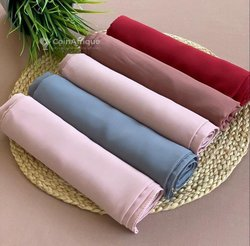

Dans le doux balancement des voiles imaginaires, une brise délicate caresse l'esprit du voyageur. Entre les plis de l'horizon, se dessine un monde aux contours flous, où les mots dansent comme des étoffes légères.Sous ce pseudo voile, je navigue vers des contrées de rêves, où chaque mot devient une destination, chaque phrase un horizon à explorer.
Le voile énigmatique de la nuit s'étend doucement, enveloppant le monde dans un mystère séduisant. Sous son étreinte délicate, les étoiles scintillent comme des joyaux célestes, tandis que la lueur de la lune danse avec les ombres. C'est dans cet univers voilé que se cache l'essence même de l'inconnu, où chaque souffle semble murmurer un secret ancestral.